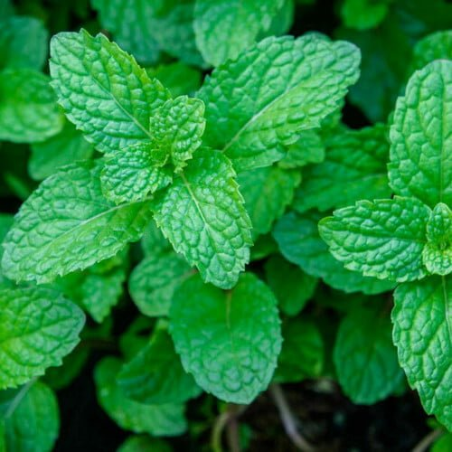

Curry Leaves 🌿
Easy Steps to Grow at Home
1.Choose the Right Pot & Soil:
-Use a medium-sized pot (8-12 inches deep) with drainage holes.
-Fill with well-draining soil mixed with compost.
2.Planting the Seeds or Cuttings:
-From Seeds: Soak seeds in water overnight before planting.
-From Cuttings: Use a 4-6 inch stem cutting from a healthy plant and plant it in moist soil.
3.Sunlight & Temperature:
-Place the plant in a sunny location (4-6 hours of sunlight daily).
-Prefers warm temperatures (20-30°C).
4.Watering:
-Keep the soil moist but not soggy.
-Water 2-3 times a week (reduce in winter).
5.Fertilization & Maintenance:
-Use organic compost or cow dung manure once a month.
-Trim the plant regularly to encourage bushy growth.
Benifits of Curry Leaves🌿✨
✔ Improves Digestion: Helps with constipation, acidity, and indigestion.
✔ Boosts Hair Growth: Prevents dandruff and strengthens hair roots.
✔ Controls Diabetes: Regulates blood sugar levels.
✔ Rich in Antioxidants: Protects against infections and inflammation.
✔ Supports Heart Health: Helps lower cholesterol levels.

Alo Vera🌱
🌱 Easy Steps to Grow Aloe Vera at Home
1.Choose the Right Pot 🏺
-Use a pot with drainage holes to prevent waterlogging.
-A terra-cotta or clay pot is best for airflow.
2.Select the Right Soil 🌿
-Use a well-draining succulent or cactus mix.
-You can mix sand or perlite into regular soil for better drainage.
3.Planting the Aloe Vera 🌱
-Place the Aloe Vera plant in the soil with roots covered.
-Do not water immediately; let it settle for a day.
4.Watering Schedule 💧
-Water once every 2-3 weeks (less in winter).
-Avoid overwatering; let the soil dry out between watering.
5.Sunlight Requirements ☀️
-Needs bright, indirect sunlight (3-6 hours a day).
-Keep it near a sunny window or balcony.
6.Temperature & Humidity 🌡️
-Thrives in temperatures 18°C - 30°C.
-Avoid placing it in extremely cold or damp areas.
7.Propagation (Growing More Plants) 🌱➡️🌱
-Aloe Vera produces "pups" (baby plants) around its base.
-Separate these and replant them to grow more Aloe plants!
🌟 Benefits of Aloe Vera
✅ For Skin & Beauty
-Natural moisturizer for skin.
-Helps treat sunburns & acne.
-Reduces dark spots & wrinkles.
✅ For Hair & Scalp
-Prevents dandruff and promotes hair growth.
-Acts as a natural conditioner.
✅ For Health
-Helps in digestion and relieves constipation.
-Boosts immunity with antioxidants.
-Reduces inflammation & heals wounds faster.
✅ For Home & Air Purification
-Absorbs toxins from the air.
-Adds oxygen to your home environment.

Turmeric
Easy Steps to Grow at Home
1.Choose the Right Pot & Soil 🏺
-Use a wide, deep pot (at least 12-15 inches deep) with drainage holes.
-Fill with loose, well-draining soil rich in organic compost.
2.Planting the Rhizomes 🌱
-Get fresh turmeric rhizomes (like ginger roots).
-Cut into small sections with at least 2-3 buds each.
-Plant 2 inches deep, buds facing upwards.
3.Watering Schedule 💧
-Keep the soil moist but not soggy.
-Water twice a week; reduce in winter.
4.Sunlight & Temperature ☀️🌡️
-Prefers warm temperatures (20-30°C).
-Needs 6-8 hours of indirect sunlight.
-Ideal for balconies, terraces, or indoor pots near a sunny window.
5.Growth & Harvesting 🌾
-Turmeric grows slowly (8-10 months).
-Leaves turn yellow when ready to harvest.
-Dig out the rhizomes, wash, and dry before use.
🌟 Benefits of Turmeric
✅ For Health & Immunity 🏥
-Contains Curcumin, which has anti-inflammatory & antioxidant properties.
-Boosts immunity and fights infections.
-Aids digestion & gut health.
✅ For Skin & Beauty ✨
-Brightens skin and reduces acne.
-Natural anti-aging & scar-healing remedy.
✅ For Pain & Healing 💊
-Helps in joint pain relief (great for arthritis).
-Used for wound healing and reducing swelling.
✅ For Detox & Weight Loss 🥗
-Aids liver detoxification.
-Improves metabolism & weight management.
Tulsi (Holy Basil)🌿
🌱Easy Steps to Grow Tulsi at Home
1.Choose the Right Pot & Soil 🏺
-Use a medium-sized pot (8-12 inches deep) with drainage holes.
-Use well-draining, nutrient-rich soil (mix garden soil with compost).
2.Planting the Seeds or Cuttings 🌱
From Seeds:
-Sow seeds ¼ inch deep in the soil.
-Keep the soil moist but not soggy.
-From Cuttings:
-Take a 4-6 inch cutting from a healthy Tulsi plant.
-Remove lower leaves and plant in moist soil.
3.Sunlight & Temperature ☀️🌡️
-Needs 5-6 hours of direct sunlight daily.
-Prefers warm temperatures (20-35°C).
4.Watering Schedule 💧
-Water lightly once every 2 days.
-Avoid overwatering to prevent root rot.
5.Pruning & Maintenance ✂️
-Trim regularly to promote bushy growth.
-Remove flowers to extend the plant’s lifespan.
6.Harvesting 🌿
-Start harvesting after 8-10 weeks.
-Pick mature leaves for best medicinal value.
🌟 Benefits of Tulsi
✅ For Health & Immunity 🏥
-Natural immunity booster (rich in antioxidants).
-Helps fight cold, cough, and flu.
-Reduces stress and anxiety.
✅ For Digestion & Detox 🥗
-Aids digestion and gut health.
-Detoxifies the body and supports liver health.
✅ For Skin & Hair ✨
-Prevents acne and skin infections.
-Strengthens hair and reduces dandruff.
✅ For Air Purification 🌬️
-Tulsi purifies indoor air by absorbing toxins.
-Increases oxygen levels around the plant.

Mint🌿
🌱Easy Steps to Grow Mint at Home
1.Choose the Right Pot & Soil 🏺
-Use a wide, shallow pot (at least 8-10 inches deep) with drainage holes.
-Fill with loose, well-draining soil mixed with compost.
2.Planting the Cuttings or Seeds 🌱
From Cuttings:
-Take a 4-6 inch cutting from a healthy mint plant.
-Remove lower leaves and plant in moist soil.
From Seeds:
-Sow seeds ¼ inch deep and keep the soil moist.
-Sunlight & Temperature ☀️🌡️
-Prefers partial sunlight (4-6 hours daily).
-Grows well in temperatures 18-30°C.
3.Watering Schedule 💧
-Keep soil consistently moist (water daily in summer).
-Avoid waterlogging; ensure good drainage.
4.Pruning & Maintenance ✂️
-Trim regularly to promote bushy growth.
-Remove flowers to prevent the plant from becoming woody.
5.Harvesting 🌿
-Start harvesting after 6-8 weeks.
-Pick leaves early in the morning for the best flavor.
🌟 Benefits of Mint
✅ For Digestion & Gut Health 🍵
-Helps relieve bloating & indigestion.
-Reduces nausea and acidity.
✅ For Skin & Hair ✨
-Treats acne and skin irritation.
-Stimulates hair growth & reduces dandruff.
✅ For Fresh Breath & Oral Health 😁
-Natural mouth freshener.
-Fights bacteria & prevents bad breath.
✅ For Stress & Relaxation ☕
-Acts as a natural stress reliever.
-Helps improve sleep & mental focus.

Ashwagandha🌿
🌱Easy Steps to Grow Ashwagandha at Home
1.Choose the Right Pot & Soil 🏺
-Use a medium to large pot (at least 12-15 inches deep) with drainage holes.
-Use well-draining, sandy or loamy soil with compost for nutrients.
2.Planting the Seeds 🌱
-Sow seeds ¼ inch deep in the soil.
-Water lightly and keep in a warm, sunny spot.
-Germination takes 2-3 weeks.
3.Sunlight & Temperature ☀️🌡️
-Needs 6-8 hours of direct sunlight daily.
-Grows best in warm climates (20-35°C).
4.Watering Schedule 💧
-Water sparingly (once every 3-4 days).
-Avoid overwatering to prevent root rot.
5.Pruning & Maintenance ✂️
-Trim dead leaves to promote healthy growth.
-The plant grows up to 3-4 feet tall in 6-8 months.
6.Harvesting 🌿
-Harvest roots after 6-8 months when leaves start drying.
-Dry and grind the roots to make Ashwagandha powder.
🌟 Benefits of Ashwagandha
✅ For Stress & Mental Health 🧘‍♂️
-Acts as a natural adaptogen, reducing stress & anxiety.
-Improves focus, memory, and sleep quality.
✅ For Energy & Stamina ⚡
-Boosts energy levels & reduces fatigue.
-Enhances physical endurance & muscle recovery.
✅ For Immunity & Healing 🏥
-Strengthens the immune system.
-Has anti-inflammatory & anti-aging properties.
✅ For Hormonal Balance ⚖️
-Supports thyroid & adrenal health.
-Helps in balancing hormones & improving vitality.

Money Plant🌿
🌱Easy Steps to Grow Money Plant at Home
1.Choose the Right Pot & Soil 🏺
-Can be grown in soil or water.
-If using soil, choose a well-draining mix with compost.
-Use a medium-sized pot (8-12 inches deep) with drainage holes.
2.Planting the Cuttings 🌱
-Take a 4-6 inch stem cutting with at least one node.
-In Water: Place the cutting in a bottle/jar with clean water.
-In Soil: Plant the cutting in moist soil.
3.Sunlight & Temperature ☀️🌡️
-Prefers indirect sunlight (too much direct sun can burn leaves).
-Grows well in warm temperatures (18-30°C).
4.Watering Schedule 💧
-In Water: Change water every 5-7 days.
-In Soil: Water once every 3-4 days (don’t overwater).
5.Pruning & Maintenance ✂️
-Trim regularly to promote bushy growth.
-Support the plant with a stick or trellis if growing tall.
6.Propagation 🌿
-Money plants grow easily from cuttings.
-Cut a stem with a node and place it in water or soil.
🌟 Benefits of Money Plant
✅ For Home & Vastu/Feng Shui 🏠
-Symbol of prosperity & good luck.
-Believed to attract positive energy & wealth.
✅ For Air Purification 🌬️
-Absorbs toxins like formaldehyde & benzene.
-Increases oxygen levels indoors.
✅ For Stress Relief 🧘‍♂️
-Having greenery at home reduces stress & boosts mood.
-Creates a calm and peaceful environment.
✅ For Easy Maintenance 🌱
-Low-maintenance & can grow in water or soil.
-Perfect for indoor spaces & offices.

Coriander🌿
🌱 Easy Steps to Grow Coriander at Home
1.Choose the Right Pot & Soil 🏺
-Use a wide, shallow pot (at least 6-8 inches deep) with drainage holes.
-Use well-draining, nutrient-rich soil (mix garden soil with compost).
2.Sowing the Seeds 🌱
-Crush whole coriander seeds lightly before sowing.
-Sow seeds ¼ inch deep, spacing them 3-4 inches apart.
-Keep the soil moist but not soggy.
3.Sunlight & Temperature ☀️🌡️
-Needs 4-6 hours of direct sunlight daily.
-Prefers cool temperatures (15-25°C); avoid extreme heat.
4.Watering Schedule 💧
-Water once every 2-3 days (keep soil slightly moist).
-Avoid overwatering, as it can cause root rot.
5.Pruning & Maintenance ✂️
-Trim outer leaves first for continuous harvest.
-Pinch off flowers to prolong leaf growth.
6.Harvesting 🌿
-Coriander is ready to harvest in 3-4 weeks.
-Cut leaves as needed, but leave some for regrowth.
🌟 Benefits of Coriander
✅ For Digestion & Gut Health 🍵
-Aids digestion and reduces bloating.
-Helps in detoxifying the body.
✅ For Immunity & Healing 🏥
-Rich in antioxidants & vitamin C.
-Has anti-inflammatory & antibacterial properties.
✅ For Skin & Hair ✨
-Clears acne & skin irritation.
-Promotes healthy hair & prevents dandruff.
✅ For Flavor & Cooking 🍽️
-Used as a fresh herb in various dishes.
-Enhances the taste & aroma of food.

Spinach 🌿
🌱 Easy Steps to Grow Spinach at Home
1.Choose the Right Pot & Soil 🏺
-Use a wide, shallow pot (at least 6-8 inches deep) with drainage holes.
-Use well-draining, nutrient-rich soil (mix garden soil with compost).
2.Sowing the Seeds 🌱
-Sow seeds ½ inch deep and 2-3 inches apart.
-Keep the soil moist but not soggy.
-Germination occurs in 5-10 days.
3.Sunlight & Temperature ☀️🌡️
-Prefers partial to full sunlight (4-6 hours daily).
-Thrives in cool temperatures (10-25°C).
4.Watering Schedule 💧
-Water every 2-3 days, keeping the soil evenly moist.
-Avoid overwatering to prevent root rot.
5.Pruning & Maintenance ✂️
-Thin out crowded seedlings for better growth.
-Regularly remove yellow or damaged leaves.
6.Harvesting 🌿
-Ready to harvest in 4-6 weeks.
-Pick outer leaves first to allow continuous growth.
🌟 Benefits of Spinach
✅ For Health & Immunity 🏥
-Rich in iron, vitamins A, C, and K.
-Boosts immunity and promotes overall health.
✅ For Digestion & Weight Loss 🍃
-High in fiber, aiding digestion and weight management.
✅ For Skin & Hair ✨
-Contains antioxidants that improve skin health.
-Promotes hair growth and strengthens roots.
✅ For Heart & Bone Health ❤️🦴
-Lowers blood pressure and supports bone strength.
-Good for heart health and reducing cholesterol levels.

Chilli 🌶️
🌱 Easy Steps to Grow Chilli at Home
1.Choose the Right Pot & Soil 🏺
-Use a pot **at least 12 inches deep** with drainage holes.
-Use **well-draining soil** with compost for nutrients.
2.Sowing the Seeds 🌱
-Sow seeds **¼ inch deep** in moist soil.
-Keep the soil warm; germination takes **7-10 days**.
3.Sunlight & Temperature ☀️🌡️
-Needs **6-8 hours of direct sunlight** daily.
-Grows best in **warm temperatures (20-30°C)**.
4.Watering Schedule 💧
-Water **every 2-3 days**, keeping soil slightly moist.
-Avoid overwatering to prevent root rot.
5.Pruning & Maintenance ✂️
-Pinch off early flowers to **promote bushier growth**.
-Support taller plants with stakes if needed.
6.Harvesting 🌿
-Chillies are ready to harvest in **60-80 days**.
-Pick **green for mild spice** or **red for maximum heat**.
🌟 Benefits of Chilli
✅ For Metabolism & Weight Loss 🔥
-Boosts metabolism and **helps in fat burning**.
✅ For Immunity & Heart Health ❤️
-Rich in **vitamins A & C**, strengthening immunity.
-Improves blood circulation and **lowers cholesterol**.
✅ For Digestion & Pain Relief 🍽️
-Stimulates digestion and **reduces bloating**.
-Contains **capsaicin**, which acts as a natural pain reliever.
✅ For Skin & Hair ✨
-Promotes **healthy skin** and reduces signs of aging.
-Boosts **hair growth by improving blood circulation**.
Cherry Tomatoes 🍅
🌱 Easy Steps to Grow Cherry Tomatoes at Home
1.Choose the Right Pot & Soil 🏺
-Use a **deep pot (at least 12-16 inches deep)** with drainage holes.
-Use **nutrient-rich, well-draining soil** mixed with compost.
2.Sowing the Seeds 🌱
-Sow seeds **¼ inch deep** in moist soil.
-Germination takes **5-10 days**.
3.Sunlight & Temperature ☀️🌡️
-Needs **6-8 hours of direct sunlight** daily.
-Grows best in **warm temperatures (18-30°C)**.
4.Watering Schedule 💧
-Water **every 2-3 days**, keeping the soil evenly moist.
-Avoid overwatering to prevent fungal diseases.
5.Pruning & Maintenance ✂️
-Support the plant with **stakes or a trellis** for better growth.
-Remove **lower leaves & suckers** to promote air circulation.
6.Harvesting 🍅
-Cherry tomatoes are ready to harvest in **60-80 days**.
-Pick when they turn **bright red, orange, or yellow**, depending on the variety.
🌟 Benefits of Cherry Tomatoes
✅ For Skin & Anti-Aging ✨
-Rich in **antioxidants & vitamin C**, promoting glowing skin.
✅ For Heart & Eye Health ❤️👀
-Contains **lycopene**, which supports heart health.
-Improves **vision & eye protection**.
✅ For Immunity & Digestion 🏥
-Boosts immunity with **vitamins A & K**.
-High fiber content supports **healthy digestion**.
✅ For Weight Loss & Hydration 💦
-Low in calories & high in water content, aiding in weight management.
Fenugreek (Methi) 🌿
🌱 Easy Steps to Grow Fenugreek at Home
1.Choose the Right Pot & Soil 🏺
-Use a **wide, shallow pot (at least 6-8 inches deep)** with drainage holes.
-Use **well-draining, loamy soil** mixed with compost.
2.Sowing the Seeds 🌱
-Soak fenugreek seeds in water overnight for faster germination.
-Sprinkle seeds **evenly over the soil** and cover with a thin layer of soil.
-Germination takes **3-5 days**.
3.Sunlight & Temperature ☀️🌡️
-Needs **4-6 hours of sunlight** daily.
-Thrives in **cool to warm temperatures (15-25°C)**.
4.Watering Schedule 💧
-Water **lightly every day** to keep the soil moist.
-Avoid overwatering, as fenugreek prefers slightly dry conditions.
5.Pruning & Maintenance ✂️
-Thin out overcrowded seedlings to ensure proper growth.
-Harvest leaves **regularly to encourage bushier growth**.
6.Harvesting 🌿
-Leaves are ready for harvest in **2-3 weeks**.
-For seeds, wait **3 months** until pods dry and turn brown.
🌟 Benefits of Fenugreek
✅ For Digestion & Weight Loss 🍃
-Rich in **fiber**, aiding digestion and reducing bloating.
-Helps control appetite and **supports weight management**.
✅ For Diabetes & Heart Health ❤️
-Regulates **blood sugar levels** and improves insulin sensitivity.
-Lowers **bad cholesterol (LDL)** and supports heart health.
✅ For Skin & Hair ✨
-Treats **acne & skin inflammation**.
-Promotes **hair growth & reduces dandruff**.
✅ For Women's Health ⚖️
-Supports **hormonal balance** and eases menstrual cramps.
-Enhances **milk production** in nursing mothers.
Bougainvillea 🌸
🌱 Easy Steps to Grow Bougainvillea at Home
1.Choose the Right Pot & Soil 🏺
-Use a **large pot (at least 12-16 inches deep)** with drainage holes.
-Prefers **well-draining, slightly sandy or loamy soil**.
2.Planting & Propagation 🌱
-Can be grown from **cuttings or saplings**.
-For cuttings: Take a **6-8 inch stem**, dip in rooting hormone, and plant in moist soil.
-Ensure proper spacing if planting in a garden.
3.Sunlight & Temperature ☀️🌡️
-Needs **6-8 hours of direct sunlight** daily.
-Grows best in **warm temperatures (20-35°C)**.
4.Watering Schedule 💧
-Water **deeply but infrequently** (once every 3-4 days).
-Allow the soil to dry out between waterings.
5.Pruning & Maintenance ✂️
-Prune regularly to **promote flowering & shape the plant**.
-Use a **trellis or fence** for support if growing as a climber.
6.Flowering & Growth 🌿
-Blooms best when slightly **underwatered & stressed**.
-Flowers appear in cycles, usually **every 4-6 weeks**.
🌟 Benefits of Bougainvillea
✅ For Decorative & Landscaping Purposes 🌿
-Adds **vibrant colors** to gardens, balconies, and fences.
-Can be grown as a **climber, hedge, or potted plant**.
✅ For Low Maintenance & Drought Resistance ☀️
-Requires **minimal care** once established.
-Thrives in **hot and dry climates**.
✅ For Air Purification 🌬️
-Helps improve **air quality** by absorbing pollutants.
✅ For Medicinal Uses 🌱
-Traditionally used in herbal remedies for **coughs & colds**.
-Tea made from **bougainvillea flowers** is believed to boost immunity.
Jasmine 🌼
🌱 Easy Steps to Grow Jasmine at Home
1.Choose the Right Pot & Soil 🏺
-Use a **medium to large pot (at least 12-16 inches deep)** with drainage holes.
-Use **well-draining, loamy soil** rich in compost.
2.Planting & Propagation 🌱
-Can be grown from **cuttings or saplings**.
-For cuttings: Take a **6-8 inch stem**, dip in rooting hormone, and plant in moist soil.
-Water lightly until roots develop (about 3-4 weeks).
3.Sunlight & Temperature ☀️🌡️
-Needs **4-6 hours of direct sunlight** daily.
-Grows best in **warm temperatures (15-30°C)**.
4.Watering Schedule 💧
-Water **regularly** but avoid overwatering.
-Soil should be moist but not soggy.
5.Pruning & Maintenance ✂️
-Prune after flowering to **encourage bushy growth**.
-Use a **trellis or fence** for support if growing as a climber.
6.Flowering & Growth 🌸
-Blooms during **spring and summer**.
-Flowers are highly **fragrant and attract pollinators**.
🌟 Benefits of Jasmine
✅ For Aromatherapy & Relaxation 🧘‍♀️
-Jasmine’s fragrance **reduces stress and anxiety**.
-Used in **essential oils and perfumes** for relaxation.
✅ For Air Purification 🌬️
-Absorbs toxins and improves **indoor air quality**.
✅ For Skin & Hair ✨
-Jasmine oil is used to **moisturize skin & reduce scars**.
-Strengthens hair and **prevents dandruff**.
✅ For Herbal & Medicinal Uses 🌱
-Jasmine tea boosts **immunity & aids digestion**.
-Traditionally used for **reducing insomnia & improving mood**.

Marigold 🌼
🌱 Easy Steps to Grow Marigold at Home
1.Choose the Right Pot & Soil 🏺
-Use a **medium-sized pot (8-12 inches deep)** with drainage holes.
-Prefers **well-draining, sandy or loamy soil** rich in organic matter.
2.Sowing the Seeds 🌱
-Sow marigold seeds **¼ inch deep** in moist soil.
-Keep in a **warm spot**, and germination occurs within **5-7 days**.
3.Sunlight & Temperature ☀️🌡️
-Needs **6-8 hours of direct sunlight** daily.
-Grows best in **warm temperatures (18-30°C)**.
4.Watering Schedule 💧
-Water **every 2-3 days**, keeping the soil slightly moist.
-Avoid overwatering, as marigolds prefer **dry soil conditions**.
5.Pruning & Maintenance ✂️
-Pinch off **dead flowers** to encourage continuous blooming.
-Trim excess branches to promote **bushier growth**.
6.Flowering & Growth 🌼
-Blooms in **4-6 weeks after planting**.
-Flowers last throughout **spring, summer, and early fall**.
🌟 Benefits of Marigold
✅ For Pest Control 🐛
-Marigolds **repel mosquitoes, aphids, and nematodes**.
-Used as a **companion plant** to protect vegetables.
✅ For Skin & Healing ✨
-Marigold extracts help **heal wounds, burns, and skin irritations**.
-Used in **lotions & herbal treatments** for healthy skin.
✅ For Air Purification 🌬️
-Improves **indoor and outdoor air quality**.
✅ For Religious & Decorative Use 🎉
-Widely used in **festivals, weddings, and rituals**.
-Adds a **bright & cheerful look** to gardens.